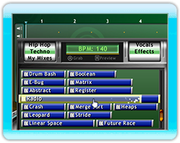
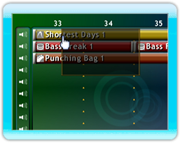
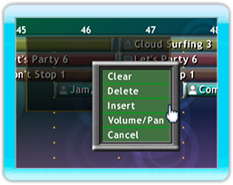

14 |
Muziek Maken |
 |
|

Nu dat je weet hoe de preview van de geluidsfragmenten van de Mix Superstar werkt, wil je er waarschijnlijk gebruik van gaan maken. Selecteer met de A-knop een geluidsfragment in de browser, en schuif het waar je maar wilt op het arranger scherm. Het verschuiven van geluidsfragmenten buiten de bovenkant van het scherm zal deze verwijderen.
Het kopiëren van geluidsfragmenten is heel gemakkelijk. Houd een geluidsfragment vast door op de A-knop te drukken. Door op de B-knop te drukken, zal een kopie van dat geluidsfragment op de arranger gezet worden.
Als je meerdere geluidsfragmenten wilt kopiëren, teken dan een bereik rond de gewenste geluidsfragmenten door de A-knop over een lege plek op de arranger ingedrukt te houden. Sleep vervolgens de wijzer om een rechthoek te maken. Je kunt nu verschillende geluidsfragmenten met de A-knop oppakken en met de B-knop kopieën maken, net zoals eerder.
Als je verschillende geluidsfragmenten tegelijkertijd wilt monteren, markeer je een bereik voor de geluidsfragmenten zoals hierboven. Druk vervolgens op de B-knop over het gemarkeerde gebied om de verschillende geluidsfragment opties te vertonen. Selecteer ‘Wissen’ om de geluidsfragmenten uit de song te verwijderen. Hierbij blijft de oorspronkelijke ruimte waar de geluidsfragmenten waren intact. Om de geluidsfragmenten en het gemarkeerde veld te verwijderen, selecteer je ‘Verwijderen’. Als je aanvullende ruimte op de gemarkeerde tracks wilt invoegen, selecteer dan ‘Invoegen’ en alle huidige geluidsfragmenten binnen het gemarkeerde track veld zullen naar voren schuiven.
Schuiven en Inzoomen |
 |
 |
 |